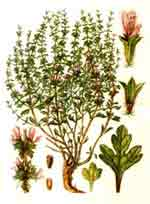

|
Sage Wisdom Botanicals
Salvia divinorum and related products
The Salvia divinorum Research and Information Center
is created and maintained by
Daniel Siebert
Top quality Salvia divinorum leaves, plants, extracts, and related products are now available. The
proceeds of all sales directly support important and much needed Salvia divinorum related
research, scientific expeditions,
and educational publications, such as those found at The Salvia divinorum Research and Information Center web site.
The Mazatecs of Central Mexico use this herb only with a clear intent and purpose. It is always used under the supervision of an experienced shaman. It is used this way for good reasons. Since Mazatec shamans are probably not available to guide you through your own Salvia divinorum experiments, it is essential that you thoroughly educate yourself before deciding to work with it. Talk to others who are already experienced with its effects, read books, and read the information available at the Salvia divinorum Research and Information Center.
IMPORTANT! I will not sell Salvia divinorum to minors! Do not place an order unless you are an adult over 18 years of age. Before you place your order, please make a commitment to yourself to use this herb in a responsible, intelligent, and safe manner. Use Salvia divinorum wisely.
The statements below have not been evaluated by the Food & Drug Administration (FDA).These products are not intended to diagnose, treat, cure, or prevent any disease.
Shopping cart for payment by mail or fax
Note: This order page is for customers who wish to send payment by mail or fax. If you prefer to pay online using a credit card, please go here where you can use our alternative ordering page.
IMPORTANT: Before placing an order, please read the detailed ordering instructions and information at the bottom of this page. Click here to jump there now.
Dried Salvia divinorum Leaves
SALVIA DIVINORUM LEAVES are now in stock and ready for immediate shipping! I only offer the finest quality, personally-selected leaves. As the only Salvia divinorum vendor
equipped to test for salvinorin A content, I am able to insure that the leaves I sell meet high potency standards.
Important! If you are purchasing Salvia divinorum leaves for smoking, please read the following information about smoked Salvia divinorum.
Click for larger image. |
Sierra Mazateca Prime Harvest
These leaves are about fifty-percent more potent than typical Hawaiian or Oaxacan leaves. They are sustainably harvested by Mazatecs farmers who cultivate the plants in their native region—the remote highlands of the Sierra Mazateca of Central Mexico. The Mazatec people have preserved Salvia divinorum and the knowledge surrounding its use for hundreds of years. We are privileged to have them share their sacred herb with us. This particular harvest contain a remarkable 0.4% salvinorin A. This is exceptional in that it represents some of the most potent leaves I have ever come across. Very highly recommended!
Prices: 1/4 ounce (7 g) = $40, 1/2 ounce (14 g) = $70, 1 ounce (28 g) = $125.
Hawaiian Connoisseur Quality
The cream of the crop! These Hawaiian grown leaves are carefully chosen during harvesting. They have been selected for superior appearance, and quality. Only the healthiest leaves are used. They are free of insect damage, discoloration, and other imperfections. They are dried extra carefully to retain good leaf color. The leaves are then carefully stacked and packaged so that they remain whole and unbroken during shipping. Perfect for ceremonial use. These are the leaves pictured at left.
Prices: 1/4 ounce (7 g) = $50, 1/2 ounce (14 g) = $85, 1 ounce (28 g) = $150.
Hawaiian Connoisseur leaves are temporarily out of stock.
|
 |
Sage Goddess Emerald Essence |
|
|
|
SAGE GODDESS EMERALD ESSENCE is an extraordinary potion of enchantment. One of the finest Salvia divinorum preparations ever created, it engenders profound experiences that enrich and nurture mind and spirit. As a tool for exploring the psyche it can provide access to fresh, often startling, insights into the nature of consciousness, reality, perception, and the fundamental mysteries of existence.
A Sage Wisdom Botanicals exclusive. This ultra-concentrated tincture of Salvia divinorum has been carefully prepared using a unique new separation process developed by Daniel Siebert. This innovative process selectively extracts and concentrates a group of natural leaf components that enhance the solubility and absorption of the active principal, salvinorin A. All intermediary extraction solvents have been completely removed so that the finished product contains nothing but premium grade Salvia divinorum, grain alcohol and water. |
This specially prepared extract is designed for sublingual absorption. The duration and quality of the experience is equivalent to that obtained using traditional Mazatec methods of oral ingestion, but it is far easier to consume and the level of effects achieved is more consistent and reliable. Many people consider this type of experience more productive and rewarding than that of smoked Salvia divinorum because the effects are gentler and considerably longer lasting.
The first effects begin 4–8 minutes after the initial dose is ingested. The strength of the effects gradually increase over the next 4–5 minutes, reaching a plateau that lasts 20–30 minutes, then gradually tapering off over another 1½–2½ hours. By using multiple doses, the duration of both the plateau and the entire experience can be increased. If the effects begin to diminish sooner than you would like, you can use booster doses to extend the experience.
Mild doses reduce extraneous mental activity and calm the mind; many people find that low doses are quite valuable as an aid to meditation and introspection. Mild doses also increase sensual awareness and can have aphrodisiac effects. A moderate dose produces a gentle expansion of consciousness that is useful for inner-journeying and self-exploration; this can also have an extraordinary memory enhancing effect that can provide access to incredibly detailed memories stretching back into early childhood (clearly this has therapeutic potential). Strong doses alter the fabric of consciousness profoundly, producing rich inner-visions and inspiring insight. Very strong doses can totally immerse one in a visionary world and can propel consciousness into the far reaches of transdimensional/transpersonal space.
Detailed use instructions are included with shipment. Go here for a table showing the number of doses contained in various bottle sizes.
Prices: 1/2 fluid ounce = $65, 1 fluid ounce = $110, 2 fluid ounce = $200
Standardized Salvinorin A Enhanced Leaf
MANY PEOPLE enjoy the effects of smoked Salvia divinorum. However, it can be difficult to achieve a satisfactory level of effects from the leaf in its natural state because of the large quantities of smoke that must be inhaled. Salvinorin A enhanced leaves make it possible to achieve effects much more easily because far less smoke is involved.
The products below are prepared by extracting pure salvinorin A, then adding a measured quantity back onto Salvia divinorum leaves to bring them up to a specific, reliable, and consistent level of potency. Products that have been prepared in this manner have particularly good burning characteristics because they do not contain the gummy impurities found in crude extracts (such as '5x' and '10x'). Since the impurities have been removed during the extraction process, they won't end up in your lungs.
Caution! This material must be handled with care and respect! Make sure that you have educated yourself about this herb and its properties before experimenting with it. Please read the Salvia divinorum FAQ at: http://sagewisdom.org/faq.html

Click image to enlarge |
'Regular-Strength'
This has been standardized to contain exactly 15 mg salvinorin A per gram of leaf. This is roughly six times the average natural leaf concentration. One gram is sufficient for 15 - 30 uses.
Prices: $65 per gram, $520 for 10 grams.
|
25 mg of 'extra strength'
Click image to enlarge |
'Extra-Strength'
This is standardized to contain exactly 1 mg salvinorin A per 25 mg of leaf (this is equivalent to 40 mg salvinorin A per gram of leaf). Because of its strength, it should only be used if the individual doses have been accurately weighed. Most people do not have access to the type of
precision balance necessary for doing this; therefore, I only offer this in individually
packaged, pre-weighed, 25-mg units. This only produces a tiny wisp of smoke, so it is ideal for people who want to minimize smoke ingestion as much as possible. Each 25-mg unit is packaged in a gelatine capsule (this serves as a container only, and is not meant to imply oral consumption). Each unit is sufficient for 1-2 uses for a person of average sensitivity.
Prices: $12 per 25-mg unit, $100 for 10 - 25-mg units.
|
Crystalline Salvinorin A (for legitimate scientific research only)
Click for larger image |
SALVINORIN A is an extraordinarily potent and highly selective kappa-opioid receptor agonist. I will only provide this material to qualified scientists involved in legitimate scientific research. If you need to procure this compound, please contact me by email at dsiebert@sagewisdom.org. You must describe the nature of your project, your institutional affiliation, and your professional qualifications. I am willing to provide this compound free of charge to scientists wishing to collaborate on publishable research projects.
Prices:
98+% purity = $20 per milligram.
92% (approx.) purity = $5.00 per milligram.
|
 |
Wild Kratom (Mitragyna speciosa) |
|

Click images to enlarge |
Kratom is one of the most effective and pleasurable psychoactive herbs available. It is usually taken as a tea. Alternatively, the leaves can be chewed or powdered and swallowed. Most people use a dose between 2 and 25 grams, depending on the level of effects desired. The effects last for 4 to 6 hours. When large doses are taken, some residual effects may linger for several hours longer. At low doses it induces mild euphoria and reduces fatigue. Low doses do not interfere with most ordinary activities, however, one should not drive or perform other activities that require full attention. At strong doses (16-25 grams) the effects are profoundly euphoric and immensely pleasurable. Typically people describe the effects as dreamy, ecstatic, and blissful. Many people experience closed-eye visuals. Strong doses must only be used when one can devote several hours to the experience itself. This herb is extremely rare outside of its native region in Southeast Asia. Kratom is illegal in Australia, Malaysia, Myanmar, and Thailand. A recent analytical study found that most of the "kratom" sold in the USA and Europe was misrepresented and is not the correct plant. Chemical analysis has confirmed that our leaves are authentic kratom. We feel fortunate to have been able to obtain a supply of the real thing to share with our customers. We are confident that this will appeal to many people who are also interested in Salvia divinorum. Highly recommended. For more information about kratom, plaese read The Kratom User's Guide.
Note: The statements contained in the Kratom User's Guide have not been evaluated by the Food & Drug Administration (FDA). This product is not intended to diagnose, treat, cure, or prevent any disease.
Prices: 1 ounce (28 g) = $40, 2 ounce (56 g) = $70, 4 ounce (112 g) = $125.
|
|
Intoxicating Mint (Lagochilus inebrians) |
|

Click images to enlarge |
After many years of searching, we have finally been able to obtain a supply of this extremely rare herb. Lagochilus inebrians has long been used for its intoxicating properties by Tajik, Tartar, Turkoman, and Uzbek tribesman. The species name inebrians refers to its traditional use as an inebriant. It is traditionally taken as a tea. The tea is usually sweetened with honey or sugar to make it more palatable. Alternatively, it can be steeped in alcohol to make a tincture (vodka works fine for this). Less herb is needed per dose when it is taken as a tincture because alcohol is more effective than water at extracting the active constituents. Depending on the method of preparation used and strength of effects desired, dosages may range from approximately 3 to 30 grams.
The effects of the plant have been largely attributed to the diterpene lagochilin. The closely related compounds lagochilin-3-acetate and lagochilin-tetraacetate are also present in the plant and might contribute to the overall effects. Like Salvia divinorum, this is one of the few members of the mint family (Labiatae) that is traditionally used as an inebriant. The most commonly reported effects include relaxation, euphoria, and subtle perceptual changes.
Some vendors are selling herbs as "Lagochilus inebrians" that are not the correct species. At least one vendor has been selling a different species, Lagochilus cabulicus, falsely claiming that it is the same as Lagochilus inebrians. I have analyzed the material offered by that vendor and found that it does not contain lagochilin. Unfortunately, the problem of people selling misidentified herbs is quite common. Unlike most other vendors, we always compare the morphological and chemical characteristics of our herbs against authenticated specimens to make sure that they are what they are supposed to be.
Prices: 1 ounce (28 g) = $40, 2 ounce (56 g) = $70, 4 ounce (112 g) = $125.
|
White Sage (Salvia apiana)
Click for larger image. |
WHITE SAGE smudge bundles have long been used as an important ceremonial incense by many Native American peoples for ritual purification and cleansing. The smoke smells wonderful and has a soothing, calming effect. I like to use it when working with Salvia divinorum in much the same way as the Mazatecs use copal incense. The end of the bundle should be set alight, then allowed to smolder. The smoke is then wafted around the room and over the body. Salvia divinorum leaves can be ritually cleansed by passing them over the smoke before they are ingested. The smoke can also be used to define 'sacred space' - a clearly defined area for the session to take place in. I find that this practice creates a calm, mindful focus and sense of preparedness that helps to prepare one for the journey ahead.
|
Ceremonial Copal Resin
Click for larger image. |
Bursera fagaroides. Similar to frankincense and myrrh, the hardened tears of copal resin are utilized as an incense. This is the most important ceremonial incense used by the Mazatecs. A few pieces of copal are placed on top of chunks of hot charcoal. The heat of the charcoal causes the resin to melt, then vaporize, creating an extraordinarily fragrant, powerful, rich, and enchanting smoke that is used for ritual purification and cleansing. A little goes a long way.
|
Cacao Beans
Click for larger image. |
Theobroma cacao. Cocao beans are one of the most important ritual offering used by the Mazatecs. The beans are usually present on their altars, and sometimes they are ritually consumed during ceremonies. Many shamans leave an offering of cacao beans near their Salvia divinorum plants when they harvest the leaves.
|
Books, CDs, and Tapes
Click image to enlarge
|
The Encyclopedia of Psychoactive Plants: Ethnopharmacology and Its Applications
By Christian Rätsch. Foreword by Albert Hofmann.
This is the long-awaited English language version of Dr. Rätsch's massive encyclopedia. The most comprehensive and thoroughly illustrated guide to the botany, history, distribution, and cultivation of all known psychoactive plants. The photos in this book are amazing. Essential reading (and viewing) for anyone with a deep interest in the subject.
• Examines 414 psychoactive plants and related substances.
• Hardcover. 944 pages. Contains 800 color photographs and 670 black-and-white illustrations.
In the traditions of every culture, plants have been highly valued for their nourishing, healing, and transformative properties. Many of the most powerful plants—those known to transport the human mind into other dimensions of consciousness—have traditionally been regarded as sacred. In The Encyclopedia of Psychoactive Plants Christian Rätsch details the botany, history, distribution, cultivation, and preparation and dosage of more than 400 psychoactive plants. He discusses their ritual and medicinal usage, cultural artifacts made from these plants, and works of art that either represent or have been inspired by them. The author begins with 168 of the most well-known psychoactives—such as cannabis, datura, and papaver—then presents 133 lesser known substances (including Salvia divinorum) as well as additional plants known as “legal highs,” plants known only from mythological contexts and literature, and plant products that include substances such as ayahuasca, incense, and soma. The text is lavishly illustrated with 800 color photographs—many of which are from the author’s extensive fieldwork around the world—showing the people, ceremonies, and art related to the ritual use of the world’s sacred psychoactives. Although this book may seem a bit expensive, it is actually quite reasonably priced considering its size and the number of photographs that it contains.
|
Click image to enlarge
|
Sage Spirit: Salvia divinorum and the Entheogenic Experience
by Martin Ball, Ph.D.
In this work, artist, musician, writer, and shamanic explorer, Martin Ball, navigates his way through the strange world of sage space, from the Burning Man festival to overtone singing and cosmic serpents, bringing back guidance and advice for the use of Salvia divinorum as a true entheogen and ritual sacrament. Sage Spirit is bound to be a valuable resource for all those interested in exploring salvia responsibly as a spiritual catalyst and consciousness-expanding agent of personal transformation. Filled with personal accounts, practical advice and philosophical reflections, this book is a must for anyone wanting to learn more about this amazing visionary plant.
|
Click image to enlarge
|
Salvia divinorum: Doorway to Thought-Free Awareness
by J. D. Arthur
With repeated sessions using salvia over the course of several years, J. D. Arthur began returning each time to the same inner landscape where he found himself entering a unique state of "thought-free” awareness. There he accessed a mode of “dream language” that communicated an exquisite constellation of detailed meanings swiftly and flawlessly. His repeated immersion in these states of trance, as well as his analysis of their approach and withdrawal, led to a profound reassessment of the nature of normal perception and a reevaluation of what we refer to as the real world. With true-life descriptions of salvia-induced visionary states, this book offers a detailed experiential analysis for those interested in exploring salvia in their quest for higher knowledge.
"This author's thoughtful investigation of the unique, leaf-induced state merits careful attention. His methodical approach and detailed documentation is a model of how to meaningfully explore such vast and elusive topics as time, mind, and language. His careful forays led him to establish familiar pathways both into and out of what he suggests may be another reality, or the far side of death. Mr. Arthur's conclusions beg the very question: What is thought?"
--Kathleen Harrison, Ethnobotantist and author
|
Click for larger image. |
Mushroom Wisdom:
How Shamans Cultivate Spiritual Consciousness
by Martin Ball, Ph.D.
This book is an excellent guide to the ritual use of vision-inducing substances as tools for cultivating practical spirituality. Although it focuses on the use of mushrooms, most of the information is equally applicable to Salvia divinorum. In this book the author uses the term spiritual in a very broad sense, and he avoids getting bogged down in religious, theistic, ethnocentric, or New Age interpretations of what that might mean. We strongly recommend this book to all salvia users, especially those who wish to utilze this herb for spiritual purposes.
Out of stock. Please check back later.
|
Click for larger image. |
Pharmako/poeia
Plant Powers, Poisons, and Herbcraft
by Dale Pendell
A masterful blend of poetry, science, and magic! Dale Pendell discusses the properties and personalities of a wide variety of psychoactive plants. Their effects are uniquely and magnificently conveyed. An ethnobotanical work of art! The Salvia divinorum chapter can be seen at:
http://sagewisdom.org/pharmakopoeia.html
This title was unavailable for several months, but is now back in print. We are delighted that the publisher decided to make more copies available.
|
Click for larger image. |
Pharmako/dynamis
Stimulating Plants, Potions, and Herbcraft
by Dale Pendell
In this extraordinary book, Dale Pendell continues the exploration of psychoactive plants begun in Pharmako/poeia. Here the author provides a wealth of interesting information on stimulant herbs and empathogens. This is the second book in the trilogy. Although it does not discuss Salvia divinorum, we are offering it here because we know that many of you who read Pharmako/poeia will want to add this companion volume to your library.
|
Click for larger image. |
Pharmako/gnosis
Plant Teachers and the Poison Path
by Dale Pendell
This is the third volume of Pendell's exquisite trilogy. In Pharmako/gnosis Pendell continues his poetic inquiry into the uses of psychoactive plants, weaving together contemporary lore, shamanic ritual, and historical and contemporary myth. The Pharmako trilogy is one of the greatest published works on the subject of psychoactive plants. It belongs in every enthusiast's collection.
|
Click for larger image. |
Plants of the Gods: Their Sacred, Healing, and Hallucinogenic Powers
Revised and expanded edition!
by Richard Evans Schultes, Albert Hofmann, and Christian Rätsch
"A visual, spiritual, and intellectual feast, Plants of the Gods is the best book ever written on hallucinogenic plants."
--Dr. Mark Plotkin, Conservation International, author of Medicine Quest: In Search of Nature's Healing Secrets
"This is a greatly enlarged and expanded edition. The photographs are spectacular. A chapter on Salvia divinorum is included. This book is well-worth purchasing, even if you already own previous editions." --Daniel J. Siebert
Three scientific titans join forces to completely revise the classic text on the ritual uses of psychoactive plants. They provide a fascinating testimony of these "plants of the gods;" tracing their uses throughout the world and their significance in shaping culture and history. In the traditions of every culture, plants have been highly valued for their nourishing, healing, and transformative properties. The most powerful of these plants, which are known to transport the human mind into other dimensions of consciousness, have always been regarded as sacred. The authors detail the uses of hallucinogens in sacred shamanic rites while providing lucid explanations of the biochemistry of these plants and the cultural prayers, songs, and dances associated with them. The text is lavishly illustrated with 400 rare photographs of plants, people, ceremonies, and art related to the ritual use of the world's sacred psychoactive flora.
|
Click for larger image. |
Vibrational Voyage: Interview with Daniel Siebert
Interviewed by Tony McGettigan.
Vibrational Voyage is a radio show broadcast from KKUP in Cupertino, California. The show is dedicated to the exploration of consciousness. On August 14, 2001 the show featured this live, in-depth, 96-minute discussion about Salvia divinorum.
|
Salvia divinorum T-shirts
- from Rowantree Arts -
Click for larger image. |
Ska Pastora The Divine Goddess of Salvia divinorum revealed! Often described as a feminine entity, the spirit of this plant has long been held sacred by the Mazatecs. This is a truly spectacular design created by an extraordinary artist well acquainted with his subject. This design is available on both black and white cotton shirts in small, medium, and large.
|
The Mindfold Relaxation Mask
Total darkness with your eyes open!
|
DESIGNED by visionary artist Alex Grey as an aid for internal visualizations and inner journeys. The Mindfold Relaxation Mask consists of a flexible black face piece backed with high-density soft foam padding. The foam padding has cutouts that allow you to experience total darkness with your eyes open! An adjustable head strap allows you to fit the Mindfold mask snuggly and comfortably to your face. It is a simple design that works extraordinarily well.
This is a great tool for visionary journeys in general, but especially so for use with Salvia divinorum, because its effects are much more pronounced when one is in darkness. Also useful for meditation, relaxation, sleep, and headache relief. A set of earplugs is included.
|
Salvia divinorum Plants
|
WE are now accepting orders for Salvia divinorum plants. These plants were recently propagated from healthy, robust cuttings. They are now well-rooted and ready for shipping. They will sell out very quickly, so we encourage you to place your order immediately. We can only ship Salvia divinorum plants to customers in the United States. For information on caring for these plants click here. We typically ship plants within 2 weeks. We will send you an email when we ship your plants so that you can prepare for their arrival.
Important: Please order plants separately from other items (i.e. complete a seperate order form when ordering plants). In this way, we can ship your other items immediately, and your plants will be shipped separately as soon as they are ready. When ordering plants, please select the "Priority Mail" shipping option (do not select "Express Mail").
|
Salvia divinorum Seeds
Click image to enlarge |
WE ARE QUITE
fortunate to be able to make these extremely rare seeds available to
you. For reasons that are not well understood, Salvia divinorum
plants almost never set seed. The seeds
germinate in approximately fourteen days, and the germination rate is
typically about thirty percent. When
you start new plants from seed you are establishing new, genetically
unique individuals, and thus doing important work to help expand the
genetic diversity of this rare species. Please be careful to label your
seed-raised plants so that they do not get confused with other Salvia divinorum
plants in your collection. Most Salvia divinorum plants are
indistinguishable from each other, but occasionally a seed-raised plant
will be visibly distinctive in some way. If you do obtain an unusual
plant, please contact us. For advice on raising Salvia divinorum plants
from seed, please go here.
Happy growing!
Buyer beware: Several people have been selling bogus "Salvia divinorum" on eBay. For more information about this situation, go here.
Out of stock. Salvia divinorum seeds are extremely rare. We do not know when we will have more available for sale.
|
Questions?
Sage Wisdom Botanicals is a relatively recent addition to my comprehensive educational site: The Salvia divinorum Research and Information Center. Answers to the most frequently asked questions about Salvia divinorum can be found in: The Salvia divinorum FAQ.
Product Recommendations
Having difficulty deciding what to order? These are my recommendations:
Sierra Mazateca Prime Harvest. Definitely the best choice for unprocessed leaf.
"Regular-strength" standardized salvinorin A fortified leaf. Much easier to work with than unprocessed leaf. I think it achieves the best balance of potency, cost, and smoke reduction.
Sage Goddess Emerald Essence. My favorite form of Salvia divinorum. Most people feel that it provides a more rewarding type of experience than does smoked Salvia divinorum.
Kratom. Many people find the effects of kratom immensely pleasurable. You might be one of them.
Customer Testimonials and Experiential Reports
We constantly receive favorable comments about our products from our customers. To see some of these unsolicited comments, go here. To read some exceptional firsthand accounts of Salvia divinorum experiences, go here.
Storage
Salvia divinorum, Mitragyna speciosa (kratom), and Lagochilus inebrians will all retain their potency for many decades if stored in a dry, dark location, such as a drawer or cupboard. They can safely be stored at room temperature. Sage Goddess Emerald Essence is particularly vulnerable to sunlight. It must be stored in a dark location because excessive exposure to sunlight will negatively effect its potency.
Staying Informed
Please consider subscribing to our free email newsletter, THE SALVIA DIVINORUM OBSERVER. The newsletter will keep you informed of Salvia divinorum related news and events, and most importantly, any impending changes in its legal status. For more information about the newsletter, go here.
Ordering Instructions and Information
IMPORTANT! I will not sell Salvia divinorum to minors! Do not place an order unless you are an adult over 18 years of age. Before you place your order, please make a commitment to yourself to use this herb in a responsible, intelligent, and safe manner.
Now accepting Visa, MasterCard, American Express, and Discover
To Place an Order:
When you are ready to order, select the quantity and item in the selection boxes above, then click on the associated button. This will add the item to your shopping cart. You always have the option of removing, changing, or adding more items to your cart. You can view the contents of your shopping cart at any time by clicking the "view your shopping cart" button at the bottom of this page. When you are finished shopping, print out a copy of your invoice to send in by fax or mail. If you are unable to print the online invoice, simply enclose a note with your payment indicating the order number that appeared at the top of the on-screen invoice. Payment may be in the form of cash, check, money order, Visa, Mastercard, or American Express. If sending cash, please send it inconspicuously. I cannot be responsible for cash payments that are lost in the mail. Please make checks and money orders payable to "Daniel Siebert." Depending on the option you selected, your invoice will show either our mailing address or fax number in the top of the page.
Paying online with a credit card: This order page is for customers who wish to send payment by mail or fax. If you prefer to pay online using a credit card, please go here where you can use our alternative ordering page.
Before placing an order, please read the detailed ordering instructions and information at the bottom of this page. Click here to jump there now.
Order Fulfillment:
All inquiries and orders will be responded to promptly and professionally. Unless otherwise noted, all items are in stock and ready for immediate shipping upon receipt of payment. Most orders are shipped within 24 hours. During unusually busy periods, shipping may be delayed an additional day or two, and I do not normally ship on weekends.
Delivery Options:
Express Mail: delivers overnight to most addresses in the USA. It takes two days to reach some areas.
Priority Mail: typically delivers in 2–3 days throughout the USA (if you are in the Los Angeles area, the package usually gets delivered the day after we ship it.)
Regular First Class Mail: The farther your address is from mine (Malibu, California), the longer it will take to reach you. Allow about a week if you are on the East-coast.
IMPORTANT: The transit periods shown above only apply after the package has been shipped. Also, bear in mind that the postal service does not always deliver packages on time; sometimes packages are delayed. If your package does not arrive as soon as you expect, please be patient—it is probably in transit.
Shipping Charges:
The shipping charge is automatically calculated based on the weight of the order and the shipping method chosen. A $5.00 basic processing/handling fee is included in the shipping charge.
Packaging:
Because some people worry about such things, all orders are packaged inconspicuously. The shipping label shows your name and address, and my return address. That is all.
Domestic Shipping (within the United States):
We ship everywhere in the United States. But before you finalize your order, please be aware of the following:
- Salvia divinorum is classified as a controlled substance in the states of Delaware, Florida, Illinois, Kansas, Kentucky, Mississippi, Missouri, North Dakota, Ohio, Oklahoma, South Dakota, and Virginia. If you live in one of these states, you would be taking a legal risk bringing this herb into your state.
- Salvia divinorum is also illegal in the states of Louisiana and Tennessee, but only if intended for human consumption. Therefore, residents of Louisiana and Tennessee should only purchase this herb if they will be using it for some other purpose. Such uses include growing the plant for ornamental purposes and any kind of scientific research that does not involve administering the drug to human subjects. A local law prohibits possession of Salvia divinorum in Suffolk County, New York.
- Salvia divinorum is entirely legal in all other states.
International Shipping:
We ship worldwide. But before you finalize your order, please be aware of the following:
- We cannot ship Salvia divinorum to Australia, Belgium, Denmark, Germany, Italy, Japan, Latvia, Lithuania, Poland, South Korea, or Sweden because it is a controlled substance in those countries and packages are likely to be intercepted by Customs officials. We do ship to Estonia, Finland, Iceland, Norway, and Iceland but Customs officials there may require the customer to provide a doctor's prescription to obtain the package. Salvia divinorum remains legal throughout the rest of the world.
- We cannot ship kratom to Australia, Latvia, Lithuania, Malaysia, or Thailand because it is a controlled substance in those countries.
- Brazilian agricultural import regulations prohibit imporation of dried herbs, but not herbal extracts.
Note: If your delivery address is outside of the United States, choose either "International Airmail" or "Global Priority Mail" as the shipping option. Delivery time varies with different countries, but typically, "International Airmail" takes 5–10 days and "Global Priority Mail" takes 3–5 days..
IMPORTANT: Packages may be delayed a few days going through Customs, so please allow extra time for this. I have shipped hundreds of packages all over the world and have never had a package not clear Customs.
Return Policy:
I will only accept returns in situations where the wrong item was shipped. People vary a lot in sensitivity to Salvia divinorum. Some people are extremely sensitive, and others are amazingly resistant to its effects. Somewhere between 10%-15% of people are unusually insensitive to salvia; these people are often referred to as "salvia hardheads." Although most people can obtain effects from salvia, not all people enjoy its effects. The products I offer are of excellent quality. All extracts are prepared very carefully and their salvinorin A content is consistent. If you have difficulty obtaining effects, you are either not using the product properly or you are a salvia hardhead. I cannot accept returns or offer refunds in cases where a person has low sensitivity to salvia or does not like its effects. Salvia pleases most of the people most of the time, but certainly not all of the people all of the time.
Contacting Me:
You can trust that your order will be shipped promptly. Please allow a reasonable amount of time for your order to arrive before emailing me to ask where it is. I receive a great deal of email and cannot always respond to questions immediately. If you have an urgent question or are legitimately concerned about an order that has not arrived, please mark the importance setting of your message as "high" or include the word "urgent" in the subject line of your message.
I am always interested in hearing reports from people regarding their experiences with Salvia divinorum. Click here to send me your thoughts, comments, experiences, and suggestions.
Back to top of page
|

{kind=link}
{kind=link}
{kind=link}
{kind=link}
{kind=link}
{kind=link}
{kind=link}
{kind=link}
{kind=link}
{kind=link}
{kind=link}
{kind=link}
{kind=link}
{kind=link}
{kind=link}
{kind=link}
{kind=link}
{kind=link}
{kind=link}
{kind=link}
{kind=link}